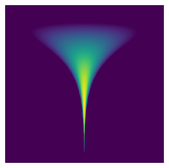

Understanding Probability Flow ODE: Converting SDEs into Deterministic Sampling¶

1. Introduction¶
Score-based generative models (SBMs) and diffusion models rely on stochastic differential equations (SDEs) to model data distributions. However, while SDEs introduce randomness in sample trajectories, they can be converted into an equivalent ordinary differential equation (ODE) that retains the same probability density evolution. This ODE, known as the Probability Flow ODE , enables deterministic sampling while preserving the learned data distribution. This post will:
-
Explain how SDE-based models generate samples
-
Derive Probability Flow ODE from Fokker-Planck theory
-
Provide an intuitive understanding of why this works
-
Give a Python implementation for deterministic sampling
2. What is an SDE-Based Generative Model?¶
A stochastic differential equation (SDE) is used to describe how data evolves over time:
where:
-
\(f(x, t)\) is the drift term (deterministic evolution).
-
\(g(t) dW\) is the diffusion term (random noise from a Wiener process \(dW\)).
-
\(p_t(x)\) is the time-dependent probability density of \(x_t\). Since SDEs include random noise , different samples follow different trajectories even if they start at the same initial condition.
3. The Fokker-Planck Equation¶
The Key to Probability Density EvolutionAlthough each sample follows a random trajectory , the probability density function \(p_t(x)\) follows a deterministic evolution governed by the Fokker-Planck equation (FPE) : $$ \frac{\partial p_t(x)}{\partial t} = -\nabla \cdot (f(x, t) p_t(x)) + \frac{1}{2} g^2(t) \nabla^2 p_t(x) $$
-
The first term \(-\nabla \cdot (f(x, t) p_t(x))\) describes the effect of the drift term \(f(x, t)\) on the probability density.
-
The second term \(\frac{1}{2} g^2(t) \nabla^2 p_t(x)\) captures how diffusion smooths out the density over time. Even though each particle moves randomly, the overall probability distribution \(p_t(x)\) evolves in a deterministic manner.
4. How Can We Convert an SDE into an ODE?¶
Since the probability density \(p_t(x)\) follows a deterministic equation (FPE), there should exist a corresponding deterministic process that moves samples in a way that preserves the same \(p_t(x)\).
This motivates the idea of a Probability Flow ODE :
where \(v(x, t)\) is a velocity field ensuring that the samples evolve according to the same probability density as the SDE, which is
where \(s_t(x) = \nabla_x \log p_t(x)\) is the score function (gradient of the log density).
Proof: Convert SDE to Probability Flow ODE
Using the continuity equation from fluid mechanics, the deterministic probability flow should satisfy:
For this to be equivalent to the Fokker-Planck equation , we set:
Rearranging:
Dividing by \(p_t(x)\) (assuming \(p_t(x) > 0\)):
Since the score function is:
we obtain the Probability Flow ODE :
Thus, we have converted the original SDE into an equivalent deterministic ODE that preserves the same probability density evolution!
5. Intuition: Why Does This Work?¶
-
SDE = Particles move randomly, but their overall density evolves deterministically.
-
ODE = Particles move deterministically in a way that ensures the density evolves the same way.
Thus, we can replace SDE sampling with Probability Flow ODE sampling without changing the generated distribution!
6. Implementing Probability Flow ODE Sampling¶
We can implement Probability Flow ODE sampling using an ODE solver like torchdiffeq.odeint:
- Key difference from SDE sampling :
-
No randomness Every run gives identical outputs.
-
Faster sampling Fewer steps needed than stochastic diffusion.
7. Existence Condition and Uniqueness Condition¶
Existence Conditions
For \(v(x, t)\) to exist , the following conditions must hold:
| Condition | Explanation |
|---|---|
| \(p_t(x)\) is continuously differentiable (\(p_t(x) \in C^1\)) | Ensures that \(\nabla_x p_t(x)\) and \(\nabla_x \log p_t(x)\) are well-defined. |
| \(p_t(x) > 0\) for all \(x\) | Avoids division by zero in the score function \(s_t(x) = \nabla_x \log p_t(x)\). |
| Drift term \(f(x, t)\) is well-defined | Ensures the continuity equation has a meaningful solution. |
| \(p_t(x)\) evolves deterministically under Fokker-Planck equation | The probability density function should not be singular. |
| \(g(t) > 0\) (Non-degenerate diffusion) | If \(g(t) = 0\), then the SDE is already deterministic and trivially satisfies an ODE. |
Uniqueness Conditions
| Condition | Explanation |
|---|---|
| \(p_t(x)\) is log-concave (\(\nabla^2 \log p_t(x) \preceq 0\)) | Ensures the score function \(s_t(x) = \nabla_x \log p_t(x)\) is unique and stable. |
| No divergence-free component in \(v(x, t)\) | If an alternative field \(v'(x,t)=v(x,t)+v_{div-free}(x,t)\) exists, \(v(x, t)\) is not unique. |
| \(p_t(x)\) is strictly positive and smooth | Avoids singularities and undefined score function regions. |
| Drift term \(f(x, t)\) is uniquely defined | Ensures a single solution to the continuity equation. |
8. Experiment¶
Target Distribution 
{kind=link}
Sampling by the Langevin Dynamics

Now we build a diffusion process that convert the tunnel distribution into the Gaussian distribution in the same way as DDPM
sampling with DDPM inverse SDE

Sampling with Probability Flow ODE

9. Conclusion¶
-
Every SDE can be converted into a Probability Flow ODE.
-
The deterministic ODE preserves the same probability density as the SDE.
-
Probability Flow ODE allows for efficient, repeatable sampling.
-
ODE solvers can be used instead of SDE solvers for generative modeling. By leveraging Probability Flow ODE, we gain a powerful tool for deterministic yet efficient sampling in deep generative models .
10. Further Reading¶
-
Song et al., "Score-Based Generative Modeling through Stochastic Differential Equations," NeurIPS 2021
-
Chen et al., "Neural ODEs," NeurIPS 2018
-
Fluid mechanics: Continuity equation and probability flow
-
"The Probability Flow ODE is Provably Fast" Authors: Sitan Chen, Sinho Chewi, Holden Lee, Yuanzhi Li, Jianfeng Lu, Adil Salim Summary: This paper provides the first polynomial-time convergence guarantees for the probability flow ODE implementation in score-based generative modeling. The authors develop novel techniques to study deterministic dynamics without contractivity. Link: arXiv:2305.11798
-
"Convergence Analysis of Probability Flow ODE for Score-based Generative Models" Authors: Daniel Zhengyu Huang, Jiaoyang Huang, Zhengjiang Lin Summary: This work studies the convergence properties of deterministic samplers based on probability flow ODEs, providing theoretical bounds on the total variation between the target and generated distributions. Link: arXiv:2404.09730 2. Practical Implementations and Tutorials:
-
"On the Probability Flow ODE of Langevin Dynamics" Author: Mingxuan Yi Summary: This blog post offers a numerical approach using PyTorch to simulate the probability flow ODE of Langevin dynamics, providing insights into practical implementation. Link: Mingxuan Yi's Blog
-
"Generative Modeling by Estimating Gradients of the Data Distribution" Author: Yang Song Summary: This post discusses learning score functions (gradients of log probability density functions) on noise-perturbed data distributions and generating samples with Langevin-type sampling. Link: Yang Song's Blog 3. Advanced Topics and Related Methods:
-
"An Introduction to Flow Matching" Authors: Cambridge Machine Learning Group Summary: This blog post introduces Flow Matching, a generative modeling paradigm combining aspects from Continuous Normalizing Flows and Diffusion Models, offering a unique perspective on generative modeling. Link: Cambridge MLG Blog
-
"Flow Matching: Matching Flows Instead of Scores" Author: Jakub M. Tomczak Summary: This article presents a different perspective on generative models with ODEs, discussing Continuous Normalizing Flows and Probability Flow ODEs. Link: Jakub M. Tomczak's Blog